Secrets and Environment Configuration
Last updated on 2026-10-04 | Edit this page
Dataverse extension: case study
This is outside the six-episode public core. Operational commands and historical status descriptions are examples for analysis, not a current production runbook. No AWS or private access is required to discuss the included material. Only authorized maintainers using a reviewed, current runbook should operate the actual service. Do not run these commands as workshop exercises.
Overview
Questions
- How are secrets kept out of the repository?
- What configuration is different between staging and production?
- What is a FAKE PID provider and why does it exist?
Objectives
- Explain what Ansible Vault does and how to use it.
- Describe the differences between test and production configuration.
- Identify which config values are environment-specific vs. shared.
- Distinguish whole-file encryption from inline values using dummy lab content.
Ansible Vault
Ansible Vault is a tool for encrypting sensitive values so they can be stored in the repository without exposing secrets. The vault password decrypts them at playbook runtime.
Common secrets stored in the vault for this project:
- Database password for the RDS instance
(
dataverse_postgresql_password) - Dataverse admin password (
dataverse_adminpass) - EZID credentials (production DOI registration)
Notably absent: AWS credentials for S3 writes are not a
vaulted secret at all. The EC2 instance authenticates to S3
through an IAM instance profile (s3.use_iam_role: true in
group_vars): there’s no access key to leak in the first
place, which is the safer design and worth naming as deliberate, not an
oversight.
When the design and the workaround disagree
The IAM-role design above is the intended pattern, but it only holds
if everyone actually uses it. In August 2026, a manual troubleshooting
session against a real S3-permissions error
(ansible-infrastructure #56, “Dataverse files not found”)
worked around the problem with asadmin create-jvm-options
setting a static dataverse.files.s3.access-key and
secret-key directly. That works, and also reintroduces
exactly the access key this design exists to avoid.
This is not a story about someone doing it wrong. It’s what manual,
hands-on-the-box troubleshooting produces under time pressure: a fix
that resolves the symptom in front of you, using whatever tool is
fastest, without necessarily routing back through the Ansible role
that’s supposed to be the source of truth. If you rebuild that instance
from scratch with make rebuild, the static key disappears
and the IAM-role config is what actually ships, so the two modes of
operating (rebuild-from-role vs. patch-the-live-box) can silently
diverge without anyone deciding they should. Worth checking group_vars
against the live instance’s actual JVM options after any manual
intervention like this one.
There’s no separate group_vars/all/vault.yml file:
secrets are inline, encrypted in place inside the same flat
group_vars/<env>.yml files as everything else, using
!vault | blocks:
An ordinary YAML file with inline !vault values is
not a whole-file vault. ansible-vault view
and edit operate on whole-file encrypted content, whose
first line is $ANSIBLE_VAULT;.... They cannot view or edit
ordinary YAML as if its inline values made the entire file encrypted.
Inline values are decrypted when Ansible loads and uses them; replace
them with newly encrypted values when editing. Do not print production
secrets to demonstrate either mechanism.
Disposable dummy-secret lab (optional, 10 minutes)
From the pointcloud-infra root, enter its controller environment,
then create a fresh temporary directory outside Git. The shell remains
active across the following commands; exit returns to the
repository afterwards.
BASH
pixi shell
umask 077
VAULT_LAB=$(mktemp -d "${TMPDIR:-/tmp}/lesson-vault.XXXXXX")
cd "$VAULT_LAB"
(set -C; openssl rand -base64 24 > .vault-password)
printf 'lab_secret: "dummy-only"\n' > whole.yml
ansible-vault encrypt --vault-password-file .vault-password whole.yml
head -1 whole.yml
ansible-vault view --vault-password-file .vault-password whole.yml
printf '%s' 'dummy-only' | ansible-vault encrypt_string --vault-password-file .vault-password --stdin-name lab_secret > inline.yml
head -2 inline.ymlPredict which file ansible-vault view accepts and
explain why. It accepts whole.yml; inline.yml
is ordinary YAML containing one encrypted scalar. The password is
created only inside a new private directory, with mode 0600; the
no-clobber subshell also prevents overwriting an existing password
file.
To demonstrate inline decryption without dumping a variable, create
check.yml:
YAML
- name: Check a dummy inline secret locally
hosts: localhost
connection: local
gather_facts: false
vars_files:
- inline.yml
tasks:
- name: Dummy value decrypts correctly
ansible.builtin.assert:
that: lab_secret == 'dummy-only'
no_log: trueA successful assertion checks the dummy value. Never substitute
project secrets. Whole-file
ansible-vault edit whole.yml --vault-password-file .vault-password
is valid here if you want to practice; it is not valid on
inline.yml as a whole. Delete the files you created in this
temporary lab when finished and type exit. Keep passwords
and plaintext out of Git; encryption at rest does not protect a secret
printed in logs or written to an unprotected destination.

Never commit unencrypted secrets
If you accidentally add a plaintext secret to the repo, treat it as
compromised and rotate it. Remove it from git history using
git filter-branch or git filter-repo, then
notify the team. The vault exists to prevent this: if in doubt, vault
it.
Test cert vs. real SSL
In production, Dataverse serves HTTPS using a Let’s Encrypt certificate obtained via Certbot. Certbot contacts Let’s Encrypt’s servers to verify domain ownership and issue the certificate.
In test environments, running Certbot would:
- Fail if the test EC2 instance is not reachable on a public domain
- Hit Let’s Encrypt rate limits during rapid rebuilds
- Register a real certificate for a temporary hostname
Instead, test environments use a self-signed certificate. In
group_vars, this is controlled by a nested key under
letsencrypt.certbot, not a flat variable:
YAML
letsencrypt:
certbot:
test_cert: true # dev.yml, test.yml -- staging certs during iterative rebuilds
# test_cert: false # TEMPLATE.yml, staging.yml default -- flip to false only at production cutover (Phase 7)When test_cert: true, Ansible generates a self-signed
certificate locally and skips Certbot entirely. Browsers will show a
security warning for self-signed certs. That is expected.
FAKE PID provider
DOI registration is the process of minting a persistent identifier for a dataset and registering it with a DOI service (UCLA uses EZID, which registers with DataCite).
In production, every published dataset gets a real, resolving DOI. In test environments, you do not want to:
- Mint real DOIs that point to a test server
- Hit EZID’s API during rapid rebuilds and testing
- Risk cluttering the production DOI namespace with test records
Dataverse has a built-in FAKE PID provider for exactly this purpose. It generates DOI-like identifiers (they look like DOIs but do not resolve) without contacting any external service.
In group_vars, this isn’t one variable but two nested
blocks: pid: (the identifier format) and doi:
(the registration service):
YAML
pid:
authority: "10.5072"
protocol: doi
shoulder: "FK2/"
doi:
provider: FAKE # dev.yml, test.yml
# provider: EZID # production, not configured yet -- no production group_vars file existsThe FAKE provider is used in all non-production environments
throughout the migration. The switch to real EZID happens only at Phase
7 (DNS cutover), and since there’s no production.yml yet,
that switch requires writing production config, not just flipping a
value in an existing file.
A dev-environment convenience got mistaken for a decision
For a while, this project’s own planning documents disagreed with
each other about whether production DOIs come from EZID or DataCite: the
roadmap and workplan said EZID, but
dev.yml/staging.yml’s DataCite-shaped test
config (real sandbox URLs, a real test prefix) looked like evidence
someone had decided to switch. A direct check with the team confirmed
production has always been EZID. The DataCite stub in dev/test config
existed because DataCite’s public sandbox needs no campus credentials
and EZID’s does. It was the path of least resistance for testing, not a
provider decision.
The lesson: what’s easiest to configure in a test environment is not evidence of what production actually uses. If you find yourself inferring a real-world fact from a dev config default, that’s a question to ask a person, not a conclusion to write down.
Environment configuration summary
| Setting | dev / test (tim, jamie) | staging / TEMPLATE default | Production |
|---|---|---|---|
| SSL certificate | Self-signed (test_cert: true) |
Let’s Encrypt (test_cert: false) |
Not yet configured |
| DOI provider | FAKE (no external calls) | FAKE | EZID (planned, Phase 7) |
| Vaulted? |
dev.yml partially vaulted |
staging.yml/test.yml have unvaulted
CHANGE_ME_USE_VAULT placeholders |
– |
| S3 access | IAM instance profile (no credentials to vault) | same | same |
Vaulting is a work in progress, not a finished state
Don’t assume every environment’s secrets are actually encrypted right
now. test.yml currently has
dataverse_adminpass: "CHANGE_ME_USE_VAULT" and
dataverse_postgresql_password: "CHANGE_ME_USE_VAULT" in
plaintext: literal placeholder strings, not real secrets, but also not
vaulted. all.yml (the shared defaults every environment
inherits unless it overrides them) has real plaintext defaults too, like
adminpass: admin. Treat “is this value vaulted in
dev.yml” and “is this value vaulted in
test.yml” as two separate questions with two different
answers today.
Spot the difference
Use the inline-vault example, test certificate and PID blocks, and
comparison table above. Authorized maintainers may also inspect current
private group_vars/dev.yml and
group_vars/test.yml; no private access is required for this
analysis.
- Which configuration blocks need environment-specific values?
- The historical table says test secrets are placeholders. Does encrypting a placeholder make it a usable deployment secret?
- What distinguishes the
pid:block fromdoi.provider, and why use FAKE in a test environment?
Certificate mode, passwords, storage and identifier settings depend
on the environment. Encrypting a placeholder protects the placeholder
but does not supply a valid secret. pid: specifies
identifier format; doi.provider selects the registration
service. FAKE avoids real external registration during tests.
- Secrets are vaulted inline inside
group_vars/<env>.yml(!vault |blocks): there is no separategroup_vars/all/vault.ymlfile. - S3 access uses an IAM instance profile, not vaulted AWS credentials: there’s no access key to leak.
- Test environments use self-signed certificates
(
letsencrypt.certbot.test_cert: true); production would use Let’s Encrypt. - DOI config is two nested blocks,
pid:anddoi:, not one flat provider variable. FAKE is used everywhere non-production; EZID is planned for Phase 7 and has no group_vars file yet. - Vaulting is incomplete today:
test.ymlhas real unvaultedCHANGE_ME_USE_VAULTplaceholders. Don’t assume every environment is equally secret-safe.